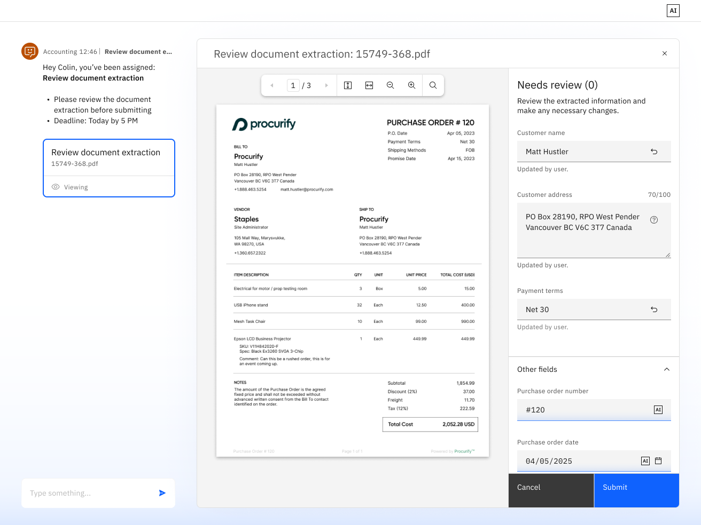
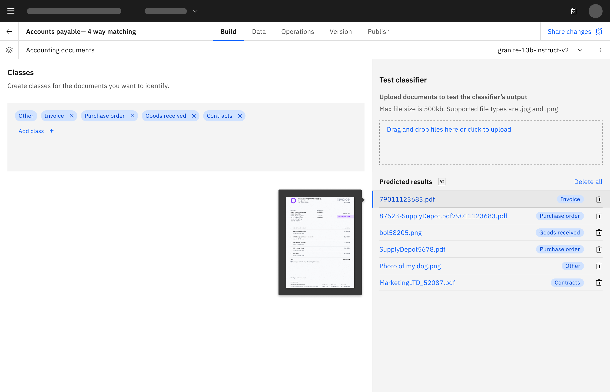
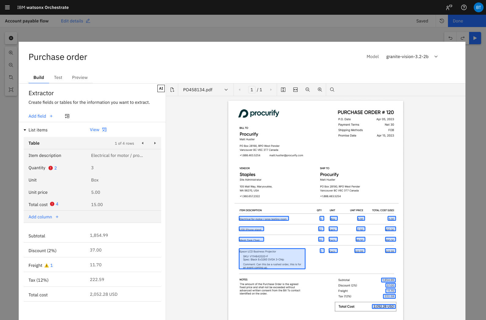

Product Design / AI Workflow Design
Designing the trust layer for AI document processing
Watson Orchestrate’s document processing capabilities helped teams automate work across business documents like invoices, purchase orders, bills of lading, and utility bills. I contributed to the shipped classifier and extractor experiences, then led Accuracy Evaluation: a workflow planned for this summer that helps builders test extraction quality against ground truth, understand where automation is reliable, and improve document schemas before deployment.
I designed the evaluation layer that helped builders understand, measure, and improve AI document extraction before trusting it in production.
Document Processing · Watson Orchestrate · AI workflow design
The missing loop after extraction
Watson Orchestrate’s document processing capabilities helped teams automate work across business documents like invoices, purchase orders, bills of lading, and utility bills.
I contributed to the broader classifier and extractor experiences, helping shape how builders configured document workflows, selected schemas, and worked with AI-generated extraction results.
But the most important question came after extraction:
How do builders know if the AI is accurate enough to trust?
That became the focus of Accuracy Evaluation, a workflow I owned as the lead designer. The goal was to help builders test extraction quality against ground truth, understand where automation was reliable, and improve their document schemas before deploying workflows at scale.
02 · The ProblemAI extraction was useful, but hard to validate
Enterprise teams needed more than “it worked on a few examples.”
Document extraction could identify fields, pull values, and support automation. But for enterprise teams, “it worked on a few examples” was not enough.
Builders needed to answer questions like:
- How accurate is this extractor across a real test set?
- Which fields are reliable?
- Which fields keep failing?
- Are schema changes improving results?
- Is this workflow ready for production?
Without a structured evaluation workflow, teams had to rely on small manual spot-checks and subjective confidence. That made it difficult to responsibly scale document automation.
The problem was not just extracting data. It was making extraction quality measurable, explainable, and improvable.

Shipped classifier and extractor work shaped the evaluation direction
Before leading Accuracy Evaluation, I tag-teamed work across the shipped document classifier and extractor experiences.
That work included:
- document classification flows
- schema-based extraction patterns
- confidence thresholds
- builder configuration experiences
- alignment with the newer agent model
- Carbon and visual consistency across related document processing work
This gave me a working understanding of the system: how builders created extractors, how document types shaped schemas, how AI confidence surfaced, and where the experience broke down between testing and deployment.
With classifier and extractor shipped, Accuracy Evaluation became the missing loop.

Lead designer for Accuracy Evaluation
For Accuracy Evaluation, I led the design direction for the experience.
My role was to define how builders could move from informal testing to a repeatable evaluation workflow:
- prepare a representative test set
- create or import ground truth
- run an evaluation
- review overall and field-level accuracy
- identify weak spots
- adjust schema definitions
- rerun evaluation and compare results
The design needed to serve technical accuracy goals while still feeling usable to builders who were configuring workflows, not performing data science.
05 · Design ApproachTurning evaluation into an iteration loop
The workflow centered around a simple quality loop:
Instead of treating accuracy as a static score, the design framed evaluation as part of the builder’s iteration process.
A builder could upload a larger set of documents, confirm the expected values, run the extractor, and compare the AI output against ground truth. From there, they could inspect weak fields, understand where extraction failed, and make targeted schema changes.
The goal was not just to show whether an extractor passed or failed. It was to help builders understand what to improve next.
06 · Key Design DecisionsMake accuracy useful, not just visible
Make metrics actionable
Accuracy, precision, recall, and F1 score are useful, but they can quickly become abstract. The design needed to translate those metrics into builder-friendly signals: what changed, what failed, which fields need attention, which documents are causing issues, and whether the extractor is improving over time.
Reuse familiar review patterns
Ground truth creation could have become a completely separate experience. Instead, the direction reused familiar review patterns from human-in-the-loop document review, keeping the experience connected to the broader platform.
Connect failures back to schema changes
When a field performed poorly, the experience needed to connect that result back to field names, descriptions, examples, document variation, or model behavior. Evaluation became a bridge between AI output and better configuration.
Design for uncertainty
AI document processing will always have edge cases. The experience could not imply perfect automation, so the design made uncertainty visible and manageable before production use.

A measurable quality loop for document automation
Accuracy Evaluation is planned for the second half of 2026 and defines a design direction for making document extraction quality easier to measure and improve.
It connected the broader document processing platform into a clearer loop:
classify → extract → review → evaluate → improve
For builders, this created a path from “the AI extracted something” to “I understand how well it performs, where it fails, and what I can do next.”
For the platform, it helped frame document processing as a more trustworthy enterprise workflow: configurable, reviewable, and measurable.
08 · What This Project ShowsDesigning trust into complex AI systems
This project shows my ability to design inside complex AI product systems where trust depends on more than a polished interface.
It reflects my strengths in AI product UX, enterprise workflow design, builder tools, systems thinking, Carbon-aligned product design, translating technical concepts into usable workflows, and owning an ambiguous product area independently.